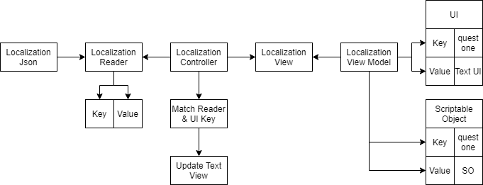

Previously I made a game using Unity3D with my friends where we need to handle localization sent by the server. while my friends focus on working with the game design, I deal with the localization. I show up with some ideas but I found all of them is not suitable, because the game has many texts inside to be found one by one. We need to store the text into a JSON file, we can write it again one by one into the JSON file, but it will take a while.
I came up with two approaches.
Enum Based Localization
Because I did not have much time to make fancy tools for the localization, I decide to create a ScriptableObject to hold the localization data when the game is in the prototype phase. I use the dummy quest text I use for testing.
I assign the text one by one and add a key for the JSON, then export it into a JSON file. Besides export into JSON files, I also generate enum files using C# CodeDom. I choose to use enum because using string to get a value from the dictionary is prone to typo and will cause an error.
But as time pass and the game get more content, I figure out that this kind of system is not good, because we have many texts and the enum will get bigger too. And also because the texts are scattered in ScriptableObject, Scripts, GameObject.

I evaluated again my localization system design and found that this system design diagram is complicated. I thought of other approach and each time I come with an approach, I create another diagram to figure it how the system will look like, how they will interact with each other, how complex the system, and is it meet our need or not.
Pros
- Accessing the localization will be easier when the text amount is small.
- You can specify the key yourself.
- There should be no repetitive text in your localization.
- You have more control over which text you want to include in your localization.
Cons
- The system design is pretty complex (I believe it can be made simpler).
- You need to specify set up more keys when game text grows.
- The enum will get bigger and hard to navigate when you do not know what you want to use.
- You need to add a localization component script yourself.
HashCode Based Localization
Our time got more strict, We do not have much more time to find, drag and drop all the localization. I decide to use the Hash Code provided in Unity API. The hash code of the text will be taken as the key in JSON. The game itself changes from using UI Text into Text Mesh Pro because we need Text Mesh Pro features. Before diving into code, I made a diagram for the system that looks a lot simpler than the previous one.

I collected all the Text Mesh Pro components in the scene using Resources.FindObjectsOfTypeAll
and write it into a JSON file, I do a similar thing for the scriptable object too, but I just drag and drop the ScriptableObject into the list in the editor and write it into JSON.
The localization files consist of a hash code of the text for its key and the text itself is the value. The game will get the localization JSON from the server. I attach the Localization Component script into each GameObject that has Text Mesh Pro. It will directly replace the Text Mesh Pro string text with the localized text using the hash code from the text in the UI.

Pros
- Fast, I do not need to set up the localization key and value, the system will automatically find it and write it into JSON.
- The localization component script is automatically attached by the system to each game object that has Text Mesh Pro.
Cons
- The key is not readable because it uses Hash Code.
- There will be similar localization that you can’t delete because it belongs to a different Instance ID.
Why not Use Existing Tools?
To be honest, I never search in the unity asset store for localization but I just knew about I2 Localization from my friends. It looks like a pretty interesting and awesome localization tool, I also knew that unity is developing its localization system.
I did not use it because I was afraid it does not meet our needs and we need time to learn it or make it meet our needs if it’s not. And when I make my own localization system I design it exactly for my games, not for general usage.
But after I take a look again at the diagram, I still can use this kind of system in my future game, after some polishing and optimization. This also helps me gain more experience in designing a modular system.
Thank you for reading my writing, I hope this is helpful.
Have a nice day :)